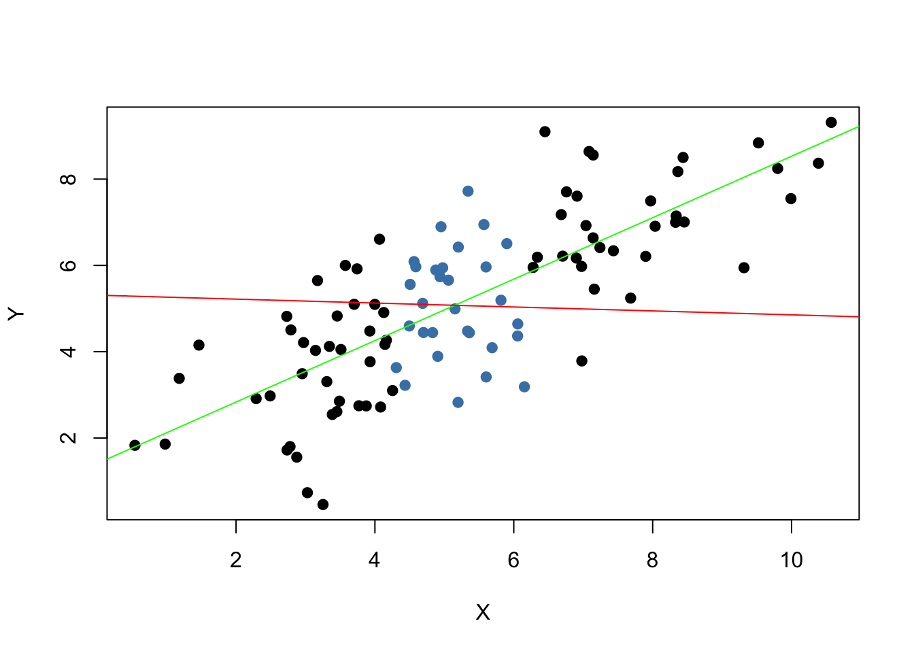

3.3 Hypothesis Tests concerning the Population Mean
In this section we briefly review concepts in hypothesis testing and discuss how to conduct hypothesis tests in R. We focus on drawing inferences about an unknown population mean.
About Hypotheses and Hypothesis Testing
In a significance test we want to exploit the information contained in a sample as evidence in favor of against a hypothesis. Essentially, hypotheses are simple questions that can be answered by ‘yes’ or ‘no’. In a hypothesis test we typically deal with two different hypotheses:
The null hypothesis, denoted by \(H_0\), is the hypothesis we are interested in testing.
There must be an alternative hypothesis, denoted by \(H_1\), the hypothesis that is thought to hold if the null hypothesis is rejected.
The null hypothesis that the population mean of \(Y\) equals the value \(\mu_{Y,0}\) is written as
\[ H_0: E(Y) = \mu_{Y,0}. \]
Often the alternative hypothesis is chosen such that it is the most general one,
\[ H_1: E(Y) \neq \mu_{Y,0}, \]
meaning that \(E(Y)\) may be anything but the value under the null hypothesis. This is called a two-sided alternative.
For the sake of brevity, we only consider two-sided alternatives in the subsequent sections of this chapter.
The p-Value
Assume that the null hypothesis is true. The \(p\)-value is the probability of drawing data and observing a corresponding test statistic that is at least as adverse to what is stated under the null hypothesis as the test statistic actually computed using the sample data.
In the context of the population mean and the sample mean, this definition can be stated mathematically in the following way:
\[\begin{equation} p \text{-value} = P_{H_0}\left[ \lvert \overline{Y} - \mu_{Y,0} \rvert > \lvert \overline{Y}^{act} - \mu_{Y,0} \rvert \right] , \tag{3.2} \end{equation}\]
In (3.2), \(\overline{Y}^{act}\) is the sample mean for the data at hand (a value). In order to compute the \(p\)-value as in (3.2), knowledge about the sampling distribution of \(\overline{Y}\) (a random variable) when the null hypothesis is true (the null distribution) is required. However, in most cases the sampling distribution and thus the null distribution of \(\overline{Y}\) are unknown. Fortunately, the CLT (see Key Concept 2.7) allows for the large-sample approximation \[ \overline{Y} \approx \mathcal{N}(\mu_{Y,0}, \, \sigma^2_{\overline{Y}}) \ \ , \ \ \sigma^2_{\overline{Y}} = \frac{\sigma_Y^2}{n}, \] assuming the null hypothesis \(H_0: E(Y) = \mu_{Y, 0}\) is true. With some algebra it follows for large \(n\) that
\[ \frac{\overline{Y} - \mu_{Y,0}}{\sigma_Y/\sqrt{n}} \sim \mathcal{N}(0,1). \]
So in large samples, the \(p\)-value can be computed without knowledge of the exact sampling distribution of \(\overline{Y}\) using the above normal approximation.
Calculating the p-Value when the Standard Deviation is Known
For now, let us assume that \(\sigma_{\overline{Y}}\) is known. Then, we can rewrite (3.2) as
\[\begin{align} p \text{-value} =& \, P_{H_0}\left[ \left\lvert \frac{\overline{Y} - \mu_{Y,0}}{\sigma_{\overline{Y}}} \right\rvert > \left\lvert \frac{\overline{Y}^{act} - \mu_{Y,0}}{\sigma_{\overline{Y}}} \right\rvert \right] \\ =& \, 2 \cdot \Phi \left[ - \left\lvert \frac{\overline{Y}^{act} - \mu_{Y,0}}{\sigma_{\overline{Y}}} \right\rvert\right]. \tag{3.3} \end{align}\]
The \(p\)-value is this area in the tails of the \(\mathcal{N}(0,1)\) distribution that lies beyond
\[\begin{equation} \pm \left\lvert \frac{\overline{Y}^{act} - \mu_{Y,0}}{\sigma_{\overline{Y}}} \right\rvert \tag{3.4} \ , \end{equation}\]
We now use R to visualize what is stated in (3.3) and (3.4). The next code chunk replicates Figure 3.1 of the book.
# plot the standard normal density on the interval [-4,4]
curve(dnorm(x),
xlim = c(-4, 4),
main = "Calculating a p-Value",
yaxs = "i",
xlab = "z",
ylab = "",
lwd = 2,
axes = "F")
# add x-axis
axis(1,
at = c(-1.5, 0, 1.5),
padj = 0.75,
labels = c(expression(-frac(bar(Y)^"act"~-~bar(mu)["Y,0"], sigma[bar(Y)])),
0,
expression(frac(bar(Y)^"act"~-~bar(mu)["Y,0"], sigma[bar(Y)]))))
# shade p-value/2 region in left tail
polygon(x = c(-6, seq(-6, -1.5, 0.01), -1.5),
y = c(0, dnorm(seq(-6, -1.5, 0.01)),0),
col = "steelblue")
# shade p-value/2 region in right tail
polygon(x = c(1.5, seq(1.5, 6, 0.01), 6),
y = c(0, dnorm(seq(1.5, 6, 0.01)), 0),
col = "steelblue")
Sample Variance, Sample Standard Deviation and Standard Error
If \(\sigma^2_Y\) is unknown, it must be estimated. This can be done using the sample variance
\[\begin{equation} s_Y^2 = \frac{1}{n-1} \sum_{i=1}^n (Y_i - \overline{Y})^2. \end{equation}\]
Furthermore
\[\begin{equation} s_Y = \sqrt{\frac{1}{n-1} \sum_{i=1}^n (Y_i - \overline{Y})^2} \end{equation}\]
is a suitable estimator for the standard deviation of \(Y\). In R, \(s_Y\) is implemented in the function sd(), see ?sd.
Using R we can illustrate that \(s_Y\) is a consistent estimator for \(\sigma_Y\), that is
\[ s_Y \overset{p}{\longrightarrow} \sigma_Y. \]
The idea here is to generate a large number of samples \(Y_1,\dots,Y_n\) where, \(Y\sim \mathcal{N}(10, 9)\) say, estimate \(\sigma_Y\) using \(s_Y\) and investigate how the distribution of \(s_Y\) changes as \(n\) gets larger.
# vector of sample sizes
n <- c(10000, 5000, 2000, 1000, 500)
# sample observations, estimate using 'sd()' and plot the estimated distributions
sq_y <- replicate(n = 10000, expr = sd(rnorm(n[1], 10, 3)))
plot(density(sq_y),
main = expression("Sampling Distributions of" ~ s[Y]),
xlab = expression(s[y]),
lwd = 2)
for (i in 2:length(n)) {
sq_y <- replicate(n = 10000, expr = sd(rnorm(n[i], 10, 3)))
lines(density(sq_y),
col = i,
lwd = 2)
}
# add a legend
legend("topleft",
legend = c(expression(n == 10000),
expression(n == 5000),
expression(n == 2000),
expression(n == 1000),
expression(n == 500)),
col = 1:5,
lwd = 2)
The plot shows that the distribution of \(s_Y\) tightens around the true value \(\sigma_Y = 3\) as \(n\) increases.
The function that estimates the standard deviation of an estimator is called the standard error of the estimator. Key Concept 3.4 summarizes the terminology in the context of the sample mean.
Key Concept 3.4
The Standard Error of \(\overline{Y}\)
Take an i.i.d. sample \(Y_1, \dots, Y_n\). The mean of \(Y\) is consistently estimated by \(\overline{Y}\), the sample mean of the \(Y_i\). Since \(\overline{Y}\) is a random variable, it has a sampling distribution with variance \(\frac{\sigma_Y^2}{n}\).
The standard error of \(\overline{Y}\), denoted \(SE(\overline{Y})\) is an estimator of the standard deviation of \(\overline{Y}\):
\[ SE(\overline{Y}) = \hat\sigma_{\overline{Y}} = \frac{s_Y}{\sqrt{n}}. \]
The caret (^) over \(\sigma\) indicates that \(\hat\sigma_{\overline{Y}}\) is an estimator for \(\sigma_{\overline{Y}}\).
As an example to underpin Key Concept 3.4, consider a sample of \(n=100\) i.i.d. observations of the Bernoulli distributed variable \(Y\) with success probability \(p=0.1\). Thus \(E(Y)=p=0.1\) and \(\text{Var}(Y)=p(1-p)\). \(E(Y)\) can be estimated by \(\overline{Y}\), which then has variance
\[ \sigma^2_{\overline{Y}} = p(1-p)/n = 0.0009 \]
and standard deviation
\[ \sigma_{\overline{Y}} = \sqrt{p(1-p)/n} = 0.03. \]
In this case the standard error of \(\overline{Y}\) can be estimated by
\[ SE(\overline{Y}) = \sqrt{\overline{Y}(1-\overline{Y})/n}. \]
Let us check whether \(\overline{Y}\) and \(SE(\overline{Y})\) estimate the respective true values, on average.
# draw 10000 samples of size 100 and estimate the mean of Y and
# estimate the standard error of the sample mean
mean_estimates <- numeric(10000)
se_estimates <- numeric(10000)
for (i in 1:10000) {
s <- sample(0:1,
size = 100,
prob = c(0.9, 0.1),
replace = T)
mean_estimates[i] <- mean(s)
se_estimates[i] <- sqrt(mean(s) * (1 - mean(s)) / 100)
}
mean(mean_estimates)
#> [1] 0.100233
mean(se_estimates)
#> [1] 0.02958415Both estimators seem to be unbiased for the true parameters. In fact, this is true for the sample mean, but not for \(SE(\overline{Y})\). However, both estimators are consistent for the true parameters.
Calculating the p-value When the Standard Deviation is Unknown
When \(\sigma_Y\) is unknown, the \(p\)-value for a hypothesis test concerning \(\mu_Y\) using \(\overline{Y}\) can be computed by replacing \(\sigma_{\overline{Y}}\) in (3.3) by the standard error \(SE(\overline{Y}) = \hat\sigma_{\overline{Y}}\). Then,
\[ p\text{-value} = 2\cdot\Phi\left(-\left\lvert \frac{\overline{Y}^{act}-\mu_{Y,0}}{SE(\overline{Y})} \right\rvert \right). \]
This is easily done in R:
# sample and estimate, compute standard error
samplemean_act <- mean(
sample(0:1,
prob = c(0.9, 0.1),
replace = T,
size = 100))
SE_samplemean <- sqrt(samplemean_act * (1 - samplemean_act) / 100)
# null hypothesis
mean_h0 <- 0.1
# compute the p-value
pvalue <- 2 * pnorm(- abs(samplemean_act - mean_h0) / SE_samplemean)
pvalue
#> [1] 0.2396777Later in the book, we will encounter more convenient approaches to obtain \(t\)-statistics and \(p\)-values using R.
The t-statistic
In hypothesis testing, the standardized sample average
\[\begin{equation} t = \frac{\overline{Y} - \mu_{Y,0}}{SE(\overline{Y})} \tag{3.5} \end{equation}\]
is called a \(t\)-statistic. This \(t\)-statistic plays an important role in testing hypotheses about \(\mu_Y\). It is a prominent example of a test statistic.
Implicitly, we already have computed a \(t\)-statistic for \(\overline{Y}\) in the previous code chunk.
# compute a t-statistic for the sample mean
tstatistic <- (samplemean_act - mean_h0) / SE_samplemean
tstatistic
#> [1] -1.175793Using R we can illustrate that if \(\mu_{Y,0}\) equal the true value, that is, if the null hypothesis is true, (3.5) is approximately \(\mathcal{N}(0,1)\) distributed when \(n\) is large.
# prepare empty vector for t-statistics
tstatistics <- numeric(10000)
# set sample size
n <- 300
# simulate 10000 t-statistics
for (i in 1:10000) {
s <- sample(0:1,
size = n,
prob = c(0.9, 0.1),
replace = T)
tstatistics[i] <- (mean(s)-0.1)/sqrt(var(s)/n)
}In the simulation above we estimate the variance of the \(Y_i\) using var(s). This is more general than mean(s)*(1-mean(s)) since the latter requires that the data are Bernoulli distributed and that we know this.
# plot density and compare to N(0,1) density
plot(density(tstatistics),
xlab = "t-statistic",
main = "Estimated Distribution of the t-statistic when n=300",
lwd = 2,
xlim = c(-4, 4),
col = "steelblue")
# N(0,1) density (dashed)
curve(dnorm(x),
add = T,
lty = 2,
lwd = 2)
Judging from the plot, the normal approximation works reasonably well for the chosen sample size. This normal approximation has already been used in the definition of the \(p\)-value, see (3.5).
Hypothesis Testing with a Prespecified Significance Level
Key Concept 3.5
The Terminology of Hypothesis Testing
In hypothesis testing, two types of mistakes are possible:
The null hypothesis is rejected although it is true (type-I-error)
The null hypothesis is not rejected although it is false (type-II-error)
The significance level of the test is the probability to commit a type-I-error we are willing to accept in advance. E.g., using a prespecified significance level of \(0.05\), we reject the null hypothesis if and only if the \(p\)-value is less than \(0.05\). The significance level is chosen before the test is conducted.
An equivalent procedure is to reject the null hypothesis if the observed test statistic is, in absolute value terms, larger than the critical value of the test statistic. The critical value is determined by the significance level chosen and defines two disjoint sets of values which are called acceptance region and rejection region. The acceptance region contains all values of the test statistic for which the test does not reject while the rejection region contains all the values for which the test does reject.
The \(p\)-value is the probability that, in repeated sampling under the same conditions a test statistic is observed that provides just as much evidence against the null hypothesis as the test statistic actually observed.
The actual probability that the test rejects the true null hypothesis is called the size of the test. In an ideal setting, the size does equal the significance level.
The probability that the test correctly rejects a false null hypothesis is called power.
Reconsider the pvalue computed further above:
The condition is not fulfilled so we do not reject the null hypothesis correctly.
When working with a \(t\)-statistic instead, it is equivalent to apply the following rule:
\[ \text{Reject } H_0 \text{ if } \lvert t^{act} \rvert > 1.96. \]
We reject the null hypothesis at the significance level of \(5\%\) if the computed \(t\)-statistic lies beyond the critical value of 1.96 in absolute value terms. \(1.96\) is the \(0.975\)-quantile of the standard normal distribution.
# check the critical value
qnorm(p = 0.975)
#> [1] 1.959964
# check whether the null is rejected using the t-statistic computed further above
abs(tstatistic) > 1.96
#> [1] FALSEJust like using the \(p\)-value, we cannot reject the null hypothesis using the corresponding \(t\)-statistic. Key Concept 3.6 summarizes the procedure of performing a two-sided hypothesis test about the population mean \(E(Y)\).
Key Concept 3.6
Testing the Hypothesis \(E(Y) = \mu_{Y,0}\) Against the Alternative \(E(Y) \neq \mu_{Y,0}\)
Estimate \(\mu_{Y}\) using \(\overline{Y}\) and compute the standard error of \(\overline{Y}\), \(SE(\overline{Y})\).
Compute the \(t\)-statistic.
Compute the \(p\)-value and reject the null hypothesis at the \(5\%\) level of significance if the \(p\)-value is smaller than \(0.05\) or, equivalently, if \[ \left\lvert t^{act} \right\rvert > 1.96. \]
One-sided Alternatives
Sometimes we are interested in testing if the mean is bigger or smaller than some value hypothesized under the null. To stick to the book, take the presumed wage gap between well and less educated working individuals. Since we anticipate that such a differential exists, a relevant alternative (to the null hypothesis that there is no wage differential) is that well educated individuals earn more, i.e., that the average hourly wage for this group, \(\mu_Y\) is bigger than \(\mu_{Y,0}\), the average wage of less educated workers which we assume to be known here for simplicity (Section 3.5 discusses how to test the equivalence of to unknown population means).
This is an example of a right-sided test and the hypotheses pair is chosen to be
\[ H_0: \mu_Y = \mu_{Y,0} \ \ \text{vs} \ \ H_1: \mu_Y > \mu_{Y,0}. \]
We reject the null hypothesis if the computed test-statistic is larger than the critical value \(1.64\), the \(0.95\)-quantile of the \(\mathcal{N}(0,1)\) distribution. This ensures that \(1-0.95=5\%\) probability mass remains in the area to the right of the critical value. As before, we can visualize this in R using the function polygon().
# plot the standard normal density on the domain [-4,4]
curve(dnorm(x),
xlim = c(-4, 4),
main = "Rejection Region of a Right-Sided Test",
yaxs = "i",
xlab = "t-statistic",
ylab = "",
lwd = 2,
axes = "F")
# add the x-axis
axis(1,
at = c(-4, 0, 1.64, 4),
padj = 0.5,
labels = c("", 0, expression(Phi^-1~(.95)==1.64), ""))
# shade the rejection region in the left tail
polygon(x = c(1.64, seq(1.64, 4, 0.01), 4),
y = c(0, dnorm(seq(1.64, 4, 0.01)), 0),
col = "darkred")
Analogously, for the left-sided test we have \[H_0: \mu_Y = \mu_{Y,0} \ \ \text{vs.} \ \ H_1: \mu_Y < \mu_{Y,0}.\] The null is rejected if the observed test statistic falls short of the critical value which, for a test at the \(0.05\) level of significance, is given by \(-1.64\), the \(0.05\)-quantile of the \(\mathcal{N}(0,1)\) distribution. \(5\%\) probability mass lies to the left of the critical value.
It is straightforward to adapt the code chunk above to the case of a left-sided test. We only have to adjust the color shading and the tick marks.
# plot the the standard normal density on the domain [-4,4]
curve(dnorm(x),
xlim = c(-4, 4),
main = "Rejection Region of a Left-Sided Test",
yaxs = "i",
xlab = "t-statistic",
ylab = "",
lwd = 2,
axes = "F")
# add x-axis
axis(1,
at = c(-4, 0, -1.64, 4),
padj = 0.5,
labels = c("", 0, expression(Phi^-1~(.05)==-1.64), ""))
# shade rejection region in right tail
polygon(x = c(-4, seq(-4, -1.64, 0.01), -1.64),
y = c(0, dnorm(seq(-4, -1.64, 0.01)), 0),
col = "darkred")